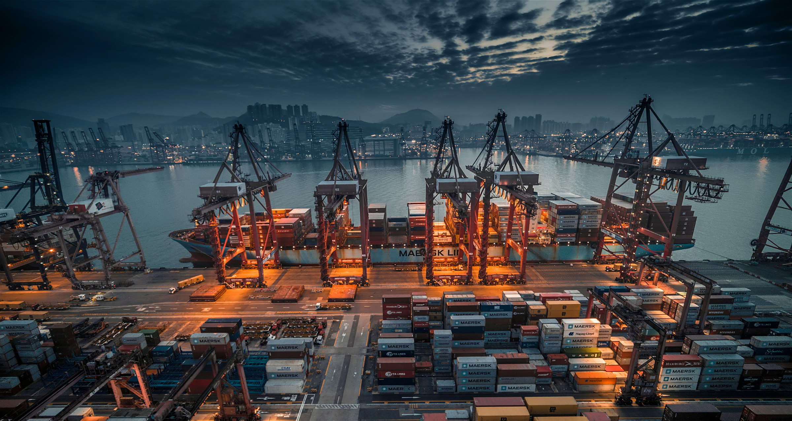
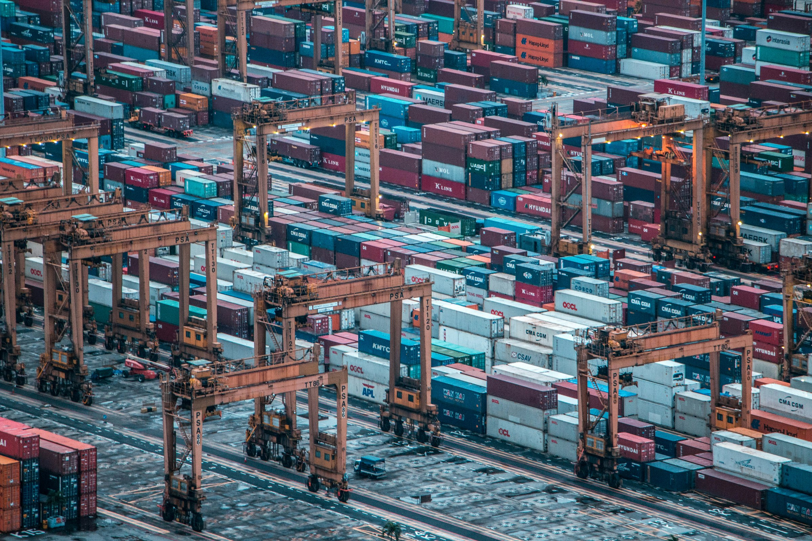
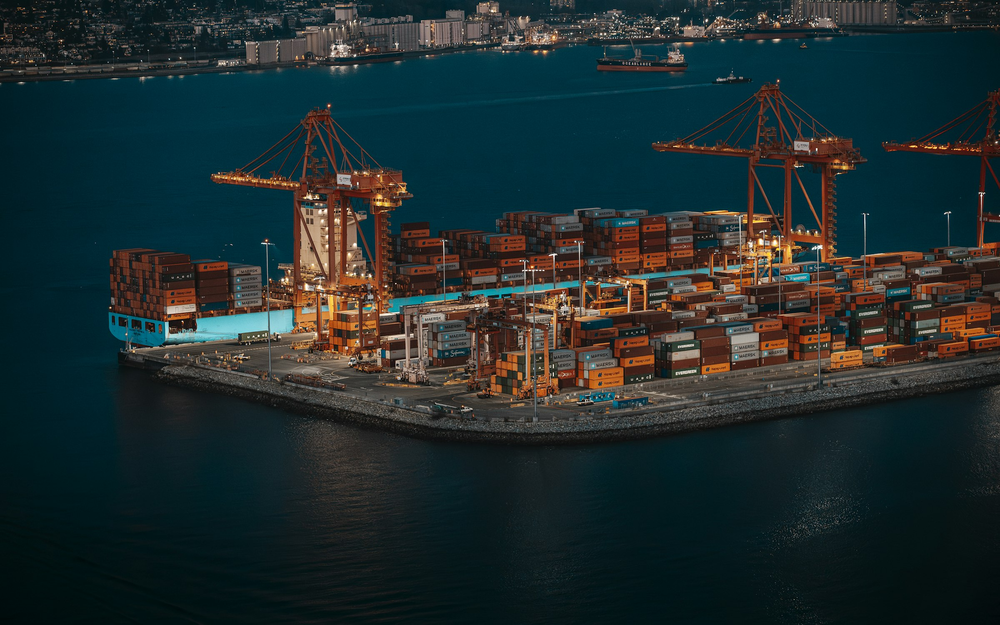
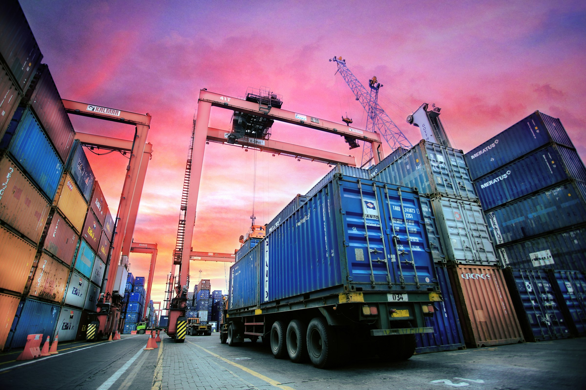

Am Shipping Capital
A clearer course
for every shipment.
A maritime perspective. A connected future for people and cargo.
01 / The wider picture
The journey behind the shipment
A shipment is more than a passage across the sea. It moves through a connected sequence of roads, terminals, vessels, and destinations.
At each handover, cargo information and physical movement need to align. Containers bring a common format to that journey, while ports connect the ocean crossing with transport on land.
This proposed direction for Am Shipping Capital puts people at the center of that connected journey, with a clear view of where information, decisions, and intelligent tools could come together.

The AI concept / A proposed next chapter
An intelligent layer.
A human-led journey.
What if the information behind every shipment moved as clearly as the cargo itself?
Explore how automation and AI agents could support the team at Am Shipping Capital: from the first inquiry to shipment updates, customer conversations, and invoice review.
- Automate the routineMove structured information between approved systems, with rules and checks at each handover.
- Assist the decisionsUse AI to extract, summarize, and explain information, with sources available for review.
- Connect the work with agentsCoordinate bounded tasks across tools, while people approve commitments and sensitive actions.

02 / Concept copy
From port to possibility.
The next opportunity is not just moving cargo. It is connecting the people and information behind it, with thoughtful technology and human judgment.
03 / A connected future
The maritime world is the setting. The AI concept explores what could happen within it. Photography is illustrative; the proposed workflows are not live company systems.

A new perspective for Am Shipping Capital